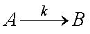
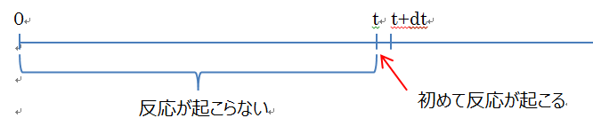

一次反応に対する持続時間の分布について
さて，このサイトで，簡単な一次反応の場合，持続時間は，
その分布は，指数関数に従うので，
と書きましたが，あたかも当たり前のように書きましたが，どのように導き出したのでしょうか？
これをきちんと考えましょう．
なお，この計算は，こちらのサイト，を参考にさせていただきました，ありがとうございました．
ランダム過程における一次反応における持続時間の分布に関して考えましょう． ある反応，

を考えましょう．
この反応が意味するところは，
単位時間あたり，ｋ，の確率でAからBへの事象が起こる
という意味となります．
つまり，ある時間間隔，Δｔ，で事象が起こる確率は，
Δｔ × k
となるわけです．
これは非常に簡単ですね．
さて，では，
ある時間，ｔ，で事象が起こる確率は？
という問いかけはどうでしょう？
これは，実は単純ではなく，
１．ｔより短い時間では反応が起こらない
２．ｔという時間，もしくはt+dt，の間に初めて反応が起こる
という二つの条件を満たさないといけないのです，つまりこの二つの確率の積となります．

では，この二つをそれぞれ考えていきましょう．